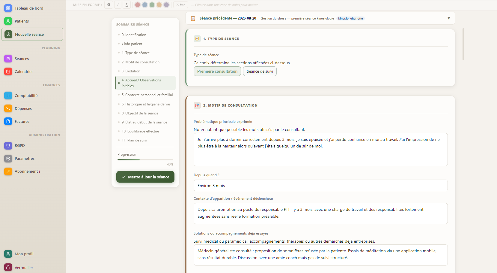
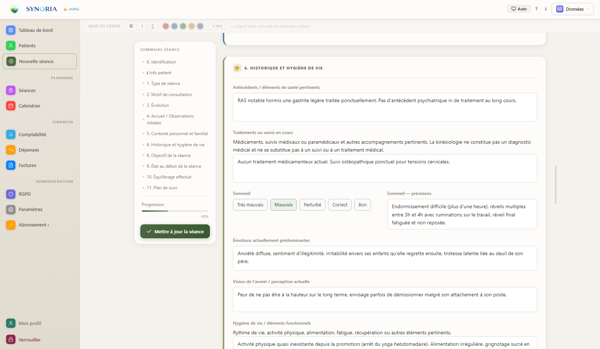
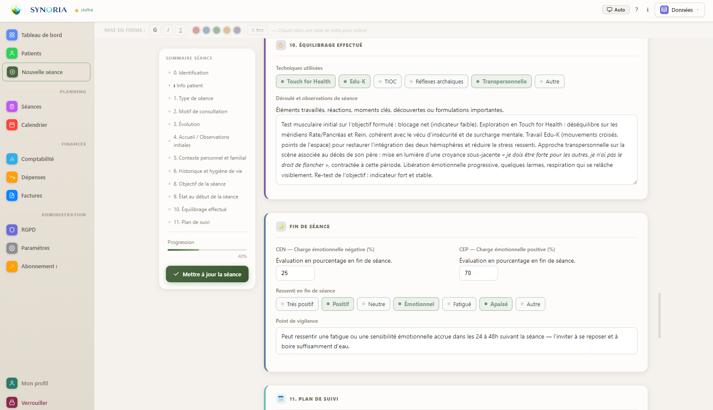
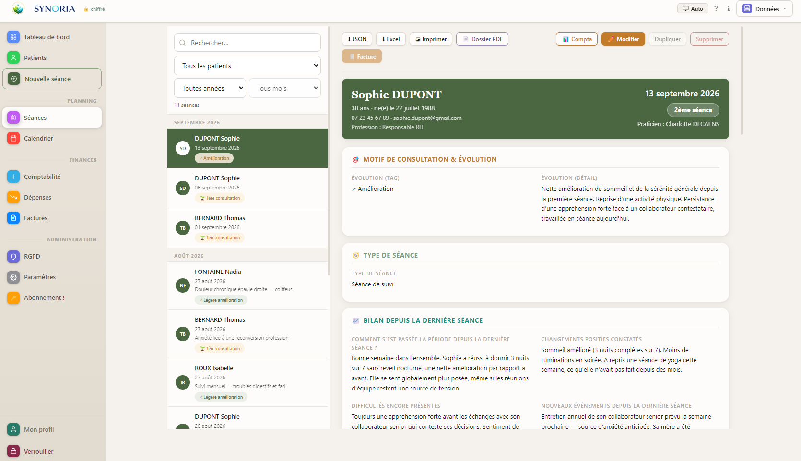

Agenda & Google Calendar
Gérez vos rendez-vous dans Synoria et synchronisez votre agenda Google si vous le souhaitez.
Synoria réunit dossiers clients, séances, agenda et facturation dans un logiciel adapté à la kinésiologie, avec vos données stockées localement sur votre ordinateur.
14 jours gratuits · Carte bancaire requise · Aucun prélèvement pendant la période d'essai

Entre le contexte de vie du client, son état psycho-émotionnel, sa motivation, ses objectifs et le déroulé de l'équilibrage, garder une vision cohérente d'un suivi devient vite difficile avec des outils génériques. Synoria structure chaque étape de l'accompagnement dans un seul dossier, consultable à tout moment d'une séance à l'autre.
Dès l'ouverture d'une séance, Synoria propose de choisir entre « Première consultation » et « Séance de suivi » : le formulaire affiche alors uniquement les sections pertinentes — motif de consultation, contexte personnel et familial, historique et hygiène de vie pour un premier rendez-vous, bilan depuis la dernière séance pour un suivi.

Synoria intègre le suivi CEN/CEP propre à la kinésiologie : la charge émotionnelle négative et positive du consultant est évaluée avant puis après l'équilibrage, pour objectiver en un coup d'œil ce que la séance a produit.

Au moment de créer une « Séance de suivi », Synoria propose un bilan structuré depuis la dernière rencontre : ce qui a évolué, les difficultés encore présentes, les réactions rapportées par le consultant, avant de définir la priorité du jour.

Synoria est conçu pour une utilisation locale : mot de passe, chiffrement de la base, verrouillage automatique, sauvegardes chiffrées et registre RGPD intégré.
Synoria stocke localement les dossiers clients sur votre poste. Aucun cloud Synoria n'est obligatoire pour leur stockage.
Base de données protégée par AES-256-GCM et dérivation PBKDF2 du mot de passe.
Consentements clients, journal d'accès et registre de traitement Article 30.
Exports chiffrés, vérification d'intégrité et restauration des données.
Le formulaire Kinésiologie s'intègre dans une application complète de gestion de cabinet.
Gérez vos rendez-vous dans Synoria et synchronisez votre agenda Google si vous le souhaitez.
Créez vos factures et suivez leur règlement.
Suivez votre activité et exportez vos données comptables.
Recevez sur votre ordinateur des rappels de vos prochains rendez-vous.
Sauvegardez vos données et vérifiez l'intégrité de vos sauvegardes.
Exportez vos informations et utilisez les outils intégrés de suivi RGPD.
Synoria intègre aussi un formulaire dédié à la médecine traditionnelle chinoise. Depuis Paramètres → Plugins, vous pouvez changer de formulaire à tout moment sans perdre l'historique de vos séances passées.
Le formulaire Kinésiologie est déjà intégré à Synoria. Si votre manière de travailler nécessite un formulaire, des sections ou des champs spécifiques, vous pouvez nous contacter afin d'étudier la création d'un plugin personnalisé adapté à votre besoin.
Création de plugin personnalisé sur devis.
Nous contacterRetrouvez le détail complet des fonctions incluses dans chaque abonnement.
Voir tous les tarifsEssai gratuit 14 jours · Carte bancaire requise
Oui. Le formulaire Kinésiologie s'adapte au type de séance choisi : à la première consultation, il déploie le motif de consultation, le contexte personnel et familial, puis l'historique et l'hygiène de vie ; lors d'un suivi, il propose un bilan depuis la dernière séance. Dans les deux cas : objectif de la séance, charge émotionnelle négative et positive (CEN/CEP) en début et fin de séance, équilibrage effectué, puis intégration et suivi pour le rendez-vous suivant.
Non, vos dossiers clients ne sont pas stockés sur nos serveurs : ils restent sur votre ordinateur, chiffrés par AES-256-GCM. N'étant jamais transmises, ces données ne peuvent pas être utilisées à d'autres fins (analyse, revente, publicité…). Si vous choisissez d'activer un service externe optionnel, comme Google Calendar, les données nécessaires à cette fonctionnalité peuvent être transmises au service concerné. Les paiements sont traités par Stripe.
Oui. Depuis Paramètres → Plugins, vous pouvez changer de formulaire à tout moment. Les séances passées restent lisibles avec le formulaire utilisé à l'époque.
Rien n'est perdu. Chaque séance conserve les informations telles qu'elles ont été saisies au moment de sa création, même si vous changez ensuite de formulaire. Vos séances passées restent donc entièrement consultables.
Oui. Une carte bancaire est demandée lors de l'inscription, mais aucun prélèvement n'est effectué pendant les 14 jours d'essai. Vous pouvez annuler avant la fin de cette période si vous ne souhaitez pas poursuivre.